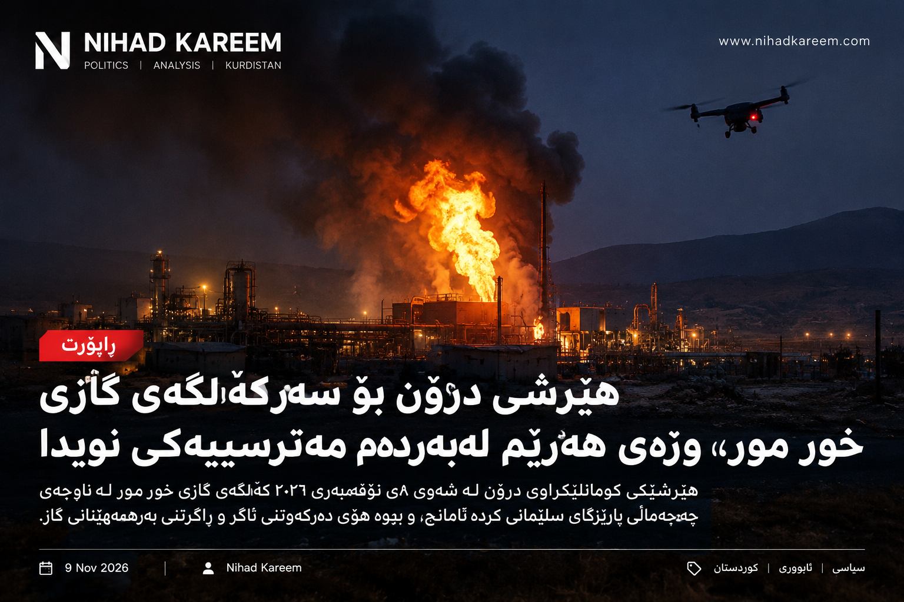

خور مور؛ هێرشێک لەسەر وزە و کارەبای کوردستان

هێرشێکی گومانلێکراوی درۆنی لە شەوی ٨ی تشرینی دووەمی ٢٠٢٦ کێڵگەی گازی خور مۆری لە پارێزگای سلێمانی کردە ئامانج. ئەم ڕووداوە بووە هۆی ئاگرکەوتنەوە لە ناو کێڵگەکە و وەستانی بەرهەمهێنانی گاز؛ ئەمەش کاریگەرییەکی ڕاستەوخۆی لەسەر دابینکردنی کارەبا لە هەرێمی کوردستان هەبوو.
چی ڕوویدا؟
بەپێی زانیارییە ڕاپۆرتکراوەکان، هێرشەکە لە نزیکەی کاتژمێر ١١ی شەوی یەکشەممە ڕوویداوە. بەشێک لە دامەزراوەکانی کێڵگەکە، بە تایبەتی بەشی پەیوەندیدار بە گازی شلەکراو و بارکردنی گاز، زیانی پێگەیشتووە و ئاگرێکی گەورە لە شوێنەکە کەوتووەتەوە.
کۆمپانیای Dana Gas کە لە بەڕێوەبردنی کێڵگەکەدا بەشدارە، لە ڕاگەیەندراوێکی فەرمی لە ٩ی تشرینی دووەمدا وتی ئاگرەکە کوژێنراوەتەوە و هیچ زیانێکی گیانی بە کارمەندانی کۆمپانیا نەگەیشتووە. بەڵام بەرهەمهێنانی گاز هێشتا وەستاوە تا هەڵسەنگاندنی زیانەکان تەواو بکرێت.
کاریگەری لەسەر کارەبای کوردستان
گرنگیی خور مور تەنها لە قەبارەی کێڵگەیەکی گازی نییە؛ ئەم کێڵگەیە سەرچاوەیەکی سەرەکیی گازە بۆ وێستگەکانی بەرهەمهێنانی کارەبا لە هەرێمی کوردستان.
وەزارەتی کارەبای هەرێم ڕایگەیاند کە وەستانی گاز دەتوانێت توانای بەرهەمهێنانی کارەبا بە نزیکەی ٢٥٠٠ تا ٢٨٠٠ مێگاوات کەم بکاتەوە. ئەم ژمارەیە هەڵسەنگاندنی کاریگەریی سەرەتاییە و دەبێت لەگەڵ نوێکارییە فەرمییەکاندا بەدواداچوونی بۆ بکرێت.
وەزارەت باس لە بەکارهێنانی سەرچاوەکانی دیکەی وزە، لەوانە وێستگە ئاوییەکان و وێستگەکانی کارکردن بە سووتەمەنیی جێگرەوە کردووە، بۆ ئەوەی دامەزراوە گرنگەکان وەک نەخۆشخانە و وێستگەکانی ئاو بەبێ پچڕانی کارەبا بمێننەوە.
بەرپرسیارێتی هێرشەکە؛ پرسیارێکی بێ وەڵام
تا کاتی ئامادەکردنی ئەم ڕاپۆرتە، هیچ لایەنێک بە شێوەی فەرمی بەرپرسیارێتی هێرشەکەی لە ئەستۆ نەگرتووە و دەسەڵاتدارانی عێراق و هەرێمیش کەس یان گرووپێکیان بە بەرپرسیاری ڕووداوەکە دیاری نەکردووە.
سەرچاوە میدیاییەکان باس لە گومان و زانیارییە جیاوازەکان دەکەن، بەڵام شوێنی دەستپێکردنی هێرش و ناسنامەی ئەنجامدەران پێویستی بە بەڵگەی فەرمی و ئەنجامی لێکۆڵینەوە هەیە. بۆیە نابێت هیچ تۆمەتێک وەک ڕاستییەکی پشتڕاستکراو پێشکەش بکرێت.
بەغدا لێکۆڵینەوە دەکات
سەرۆک وەزیرانی عێراق، عەلی فالح الزەیدی، فەرمانی پێکهێنانی لیژنەیەکی هاوبەشی داوە بۆ لێکۆڵینەوە لە بارودۆخی هێرشەکە، بە هاوبەشی لەگەڵ دەسەڵاتدارانی هەرێمی کوردستان.
ئەنجامی ئەم لێکۆڵینەوەیە گرنگە، چونکە دیاریکردنی بەرپرسیاران و ڕێگریکردن لە دووبارەبوونەوەی هێرشەکان پەیوەندیی ڕاستەوخۆی بە ئاسایشی دامەزراوە ستراتیژییەکان و ژیانی هاووڵاتیانەوە هەیە.
خوێندنەوەی سیاسی
هێرشی خور مور تەنها ڕووداوێکی ئاسایشی لەسەر دامەزراوەیەکی وزە نییە؛ ئەم ڕووداوە جارێکی دیکە پرسیاری ئاسایشی ژێرخانی ستراتیژی، پەیوەندیی نێوان بەغدا و هەرێم، و توانای پاراستنی سەرچاوە گرنگەکانی وزەی کوردستان دەخاتە پێشەوە.
کاتێک بەشێکی زۆر لە کارەبای ناوچەیەک پشت بە سەرچاوەیەکی دیاریکراوی گاز دەبەستێت، هەر پچڕانێک لە بەرهەمهێنانی ئەو سەرچاوەیە دەتوانێت کاریگەرییەکی فراوان لەسەر ژیانی ڕۆژانەی خەڵک دروست بکات.
بۆیە پێویستە پاراستنی دامەزراوەکانی وزە ببێتە بەشێکی سەرەکی لە پلانی ئاسایشی هەرێم و عێراق. لە هەمان کاتدا، فرەچەشنکردنی سەرچاوەکانی وزە، زیادکردنی توانای وێستگە جێگرەوەکان و ڕوونیی لێکۆڵینەوەکان دەتوانن مەترسییەکانی داهاتوو کەم بکەنەوە.
کۆتایی
ئاگرەکەی خور مور کوژێنراوەتەوە، بەڵام پرسیارە سەرەکییەکان هێشتا ماونەتەوە: زیانی ڕاستەقینەی دامەزراوەکە چەندە؟ کەی بەرهەمهێنانی گاز دەست پێدەکاتەوە؟ و لێکۆڵینەوەکان کێ بە بەرپرسیار دەزانن؟
وەڵامی ئەم پرسیارانە بۆ ئاسایشی وزە و کارەبای کوردستان گرنگە. تا ئەو کاتە، پێویستە زانیارییە فەرمییەکان بەدواداچوونیان بۆ بکرێت و لە بڵاوکردنەوەی هەواڵی پشتڕاستنەکراو خۆ بپارێزرێت.
A suspected drone attack targeted the Khor Mor gas field in Sulaymaniyah province on the night of 8 November 2026. The incident sparked a fire at the facility and led to the suspension of gas production, with immediate consequences for electricity generation in the Kurdistan Region of Iraq.
What happened?
Reports said the attack took place at around 11 p.m. on Sunday. Parts of the facility, including infrastructure connected to liquefied petroleum gas and loading operations, were reportedly damaged, causing a major fire.
Dana Gas, one of the companies operating the field, said on 9 November that the fire had been extinguished and that no personnel had been injured. However, production remained suspended while the company assessed the damage.
Impact on electricity in Kurdistan
Khor Mor is not simply another gas facility. It is a major source of fuel for power stations across the Kurdistan Region.
The Kurdistan Region's Ministry of Electricity warned that the interruption could reduce electricity generation capacity by approximately 2,500 to 2,800 megawatts. This was an initial estimate of the disruption and should be read alongside subsequent official updates.
The ministry said it would rely on alternative sources, including hydropower and power stations capable of using other fuels, to help maintain supplies to essential facilities such as hospitals and water stations.
Who was responsible?
At the time of publication, no group had officially claimed responsibility for the attack. Iraqi and Kurdish authorities had not publicly identified those responsible.
Media reports have carried different claims and accounts about the possible origin of the attack. However, the launch location and the identity of those behind it require confirmation through evidence and an official investigation. Allegations should not be presented as established facts.
Baghdad orders an investigation
Iraqi Prime Minister Ali Faleh al-Zaidi ordered the formation of a joint investigative committee with the relevant authorities in the Kurdistan Region to examine the circumstances of the incident.
The investigation matters not only for identifying those responsible, but also for preventing further attacks on strategic infrastructure that directly affects people's daily lives.
Political analysis
The Khor Mor attack is more than a security incident at an energy facility. It raises renewed questions about the protection of strategic infrastructure, relations between Baghdad and the Kurdistan Region, and the ability to safeguard the Region's vital energy resources.
When a large share of an area's electricity supply depends on a particular source of gas, any interruption to that source can have far-reaching consequences for households, businesses and public services.
Protecting energy infrastructure should therefore be a central part of security planning in both the Kurdistan Region and federal Iraq. Diversifying energy sources, strengthening alternative generation capacity and ensuring transparent investigations can help reduce future vulnerabilities.
Conclusion
The fire at Khor Mor has been extinguished, but important questions remain: how extensive is the damage, when will gas production resume, and what will the investigation establish about those responsible?
The answers matter for the Region's energy security and electricity supply. Until more verified information is released, official updates should be followed and unconfirmed claims treated with caution.
استهدف هجوم يُشتبه بأنه نُفذ بطائرة مسيّرة حقل خور مور للغاز في محافظة السليمانية ليلة 8 تشرين الثاني 2026. وأدى الحادث إلى اندلاع حريق في المنشأة وتعليق إنتاج الغاز، مع انعكاسات مباشرة على توليد الكهرباء في إقليم كردستان العراق.
ماذا حدث؟
أفادت التقارير بأن الهجوم وقع قرابة الساعة الحادية عشرة من مساء الأحد. وتعرضت أجزاء من المنشأة، بما فيها مرافق مرتبطة بالغاز المسال وعمليات التحميل، لأضرار تسببت في اندلاع حريق كبير.
وقالت شركة دانة غاز، إحدى الشركات المشغلة للحقل، في 9 تشرين الثاني إن الحريق أُخمد ولم يُصب أي من العاملين. لكنها أوضحت أن الإنتاج لا يزال متوقفاً إلى حين استكمال تقييم الأضرار.
التأثير على الكهرباء في كردستان
لا يمثل خور مور مجرد منشأة أخرى لإنتاج الغاز؛ فهو مصدر رئيسي للوقود الذي تعتمد عليه محطات توليد الكهرباء في إقليم كردستان.
وحذرت وزارة الكهرباء في الإقليم من أن توقف الإمدادات قد يؤدي إلى انخفاض قدرة توليد الكهرباء بنحو 2500 إلى 2800 ميغاواط. ويُعد هذا تقديراً أولياً لحجم التأثير، وينبغي متابعته في ضوء التحديثات الرسمية.
وقالت الوزارة إنها ستعتمد على مصادر بديلة، منها الطاقة الكهرومائية ومحطات قادرة على استخدام أنواع أخرى من الوقود، للمساعدة في استمرار تزويد المرافق الأساسية مثل المستشفيات ومحطات المياه بالكهرباء.
من يقف وراء الهجوم؟
حتى وقت نشر هذا التقرير، لم تعلن أي جهة رسمياً مسؤوليتها عن الهجوم، كما لم تحدد السلطات العراقية أو سلطات الإقليم الجهة التي تقف وراءه.
تناولت تقارير إعلامية روايات وادعاءات مختلفة بشأن مصدر الهجوم المحتمل. لكن تحديد موقع الإطلاق وهوية المنفذين يتطلب أدلة ونتائج تحقيق رسمي. لذلك لا ينبغي عرض الاتهامات على أنها حقائق مؤكدة.
بغداد تأمر بتشكيل لجنة تحقيق
أمر رئيس الوزراء العراقي علي فالح الزيدي بتشكيل لجنة تحقيق مشتركة مع السلطات المعنية في إقليم كردستان للنظر في ملابسات الحادث.
وتكتسب التحقيقات أهمية ليس فقط لتحديد المسؤولين، بل أيضاً لمنع تكرار الهجمات على البنية التحتية الاستراتيجية التي تؤثر مباشرة في حياة المواطنين.
قراءة سياسية
إن الهجوم على خور مور ليس مجرد حادث أمني استهدف منشأة للطاقة، بل يعيد طرح تساؤلات حول حماية البنية التحتية الاستراتيجية، والعلاقة بين بغداد وإقليم كردستان، والقدرة على حماية الموارد الحيوية للطاقة في الإقليم.
عندما يعتمد جزء كبير من إمدادات الكهرباء في منطقة ما على مصدر محدد للغاز، فإن أي توقف في هذا المصدر يمكن أن يترك آثاراً واسعة على الأسر والأعمال والخدمات العامة.
لذلك ينبغي أن تكون حماية منشآت الطاقة جزءاً أساسياً من الخطط الأمنية في الإقليم والعراق الاتحادي. كما أن تنويع مصادر الطاقة وتعزيز قدرات التوليد البديلة وضمان شفافية التحقيقات يمكن أن يقلل من المخاطر المستقبلية.
الخلاصة
أُخمد الحريق في خور مور، لكن أسئلة مهمة لا تزال قائمة: ما حجم الأضرار الفعلية؟ ومتى سيُستأنف إنتاج الغاز؟ وماذا ستكشف التحقيقات بشأن المسؤولين عن الهجوم؟
تمثل الإجابات عن هذه الأسئلة أهمية كبيرة لأمن الطاقة والكهرباء في الإقليم. وحتى صدور معلومات موثوقة جديدة، ينبغي متابعة البيانات الرسمية والتعامل بحذر مع الادعاءات غير المؤكدة.